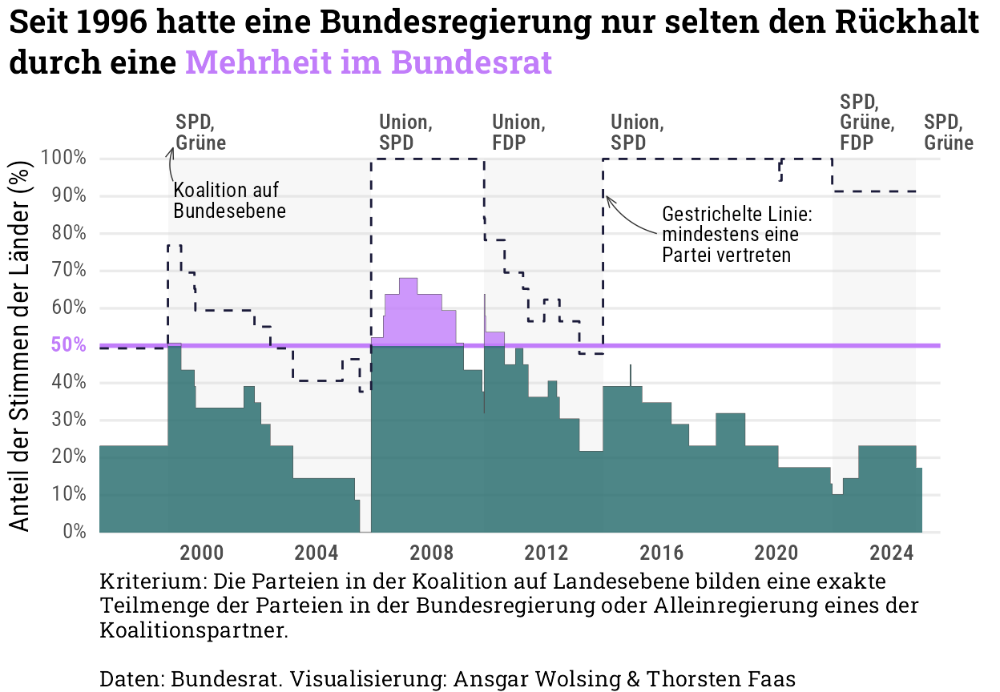
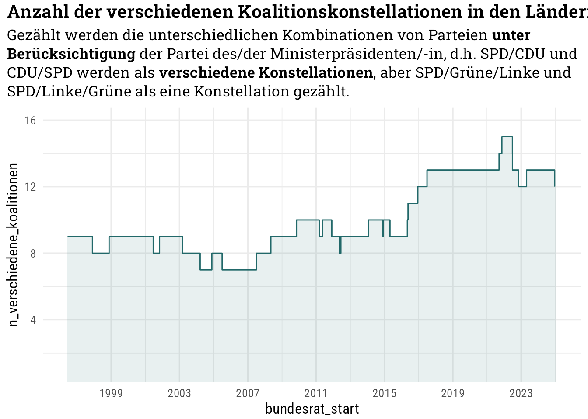

Code
library(tidyverse)
library(ggtext)
library(readxl)
library(gt)
library(gtsummary)
library(here)
knitr::opts_chunk$set(dev = "ragg_png")
source(here("R", "custom-theme.R"))
theme_set(theme_custom())library(tidyverse)
library(ggtext)
library(readxl)
library(gt)
library(gtsummary)
library(here)
knitr::opts_chunk$set(dev = "ragg_png")
source(here("R", "custom-theme.R"))
theme_set(theme_custom())df_bundesrat <- read_xlsx(here("data", "BRZusammensetzung_Jan25.xlsx"), sheet = 1,
.name_repair = janitor::make_clean_names)
df_bundesrat <- filter(df_bundesrat, zusammensetzung != "SUMME")https://www.bundesrat.de/DE/bundesrat/verteilung/verteilung.html
stimmen <- c(
"Baden-Württemberg" = 6,
"Bayern" = 6,
"Berlin" = 4,
"Brandenburg" = 4,
"Bremen" = 3,
"Hamburg" = 3,
"Hessen" = 5,
"Mecklenburg-Vorpommern" = 3,
"Niedersachsen" = 6,
"Nordrhein-Westfalen" = 6,
"Rheinland-Pfalz" = 4,
"Saarland" = 3,
"Sachsen" = 4,
"Sachsen-Anhalt" = 4,
"Schleswig-Holstein" = 4,
"Thüringen" = 4
)
# Probe: 69 Stimmen
sum(stimmen)[1] 69df_bundesregierungen <- read_tsv(here("data", "bundesregierungen.tsv"))keep_cols <- c("zusammensetzung", "start", "ende", "wochen_gerundet",
"bw", "bay", "ber", "bra", "bre", "hh", "hes", "mc_vp", "nds", "nrw", "rlp",
"saar", "sachsen", "sa_a", "sh", "thu")
bundesland_cols <- names(stimmen)
df_bundesrat <- df_bundesrat[, keep_cols]
colnames(df_bundesrat) <- c("bundesrat_zusammensetzung", "bundesrat_start", "bundesrat_ende",
"bundesrat_wochen", bundesland_cols)
colnames(df_bundesrat) [1] "bundesrat_zusammensetzung" "bundesrat_start"
[3] "bundesrat_ende" "bundesrat_wochen"
[5] "Baden-Württemberg" "Bayern"
[7] "Berlin" "Brandenburg"
[9] "Bremen" "Hamburg"
[11] "Hessen" "Mecklenburg-Vorpommern"
[13] "Niedersachsen" "Nordrhein-Westfalen"
[15] "Rheinland-Pfalz" "Saarland"
[17] "Sachsen" "Sachsen-Anhalt"
[19] "Schleswig-Holstein" "Thüringen" df_bundesrat <- df_bundesrat |>
mutate(bundesrat_zusammensetzung = as.integer(bundesrat_zusammensetzung))
df_bundesrat_long <- df_bundesrat |>
filter(bundesrat_zusammensetzung != "SUMME") |>
pivot_longer(cols = all_of(bundesland_cols), names_to = "bundesland", values_to = "land_koalition") Bundesrats- und Bundesregierungs-Timelines zusammenführen und Überlappung zwischen Bund und Land ermitteln
# Cross Join + anschließend überlappende Zeitintervalle behalten
df_bundesrat_bundesregierung <- df_bundesrat_long |>
cross_join(df_bundesregierungen) |>
filter(
(bund_start >= bundesrat_start & bund_start <= bundesrat_ende) |
(bund_ende >= bundesrat_start & bund_ende <= bundesrat_ende) |
(bundesrat_start >= bund_start & bundesrat_ende <= bund_ende)
) |>
# count(year(bundesrat_start), year(bundesrat_ende), bundesrat_zusammensetzung) |> View()
arrange(bundesrat_start, bund_start, bundesland) |>
mutate(
# Stimmen der Bundesländer hinzufügen
stimmen = stimmen[bundesland],
# CDU/CSU als Union codieren
across(c(land_koalition, bund_koalition),
function(x) str_replace(x, "(CDU, CSU|CDU|CSU)", "Union"))
) |>
rowwise() |>
mutate(
land_parteien = str_split(land_koalition, "/"),
bund_parteien = str_split(bund_koalition, ", "),
# Koalitionen in Bund und Land gleich
koalition_gleich = setequal(land_parteien, bund_parteien),
# Alleinregierung einer der Koalitionsparteien im Bund
koalition_allein = length(land_parteien) == 1 && land_parteien %in% bund_parteien,
# 2 aus 3 Parteien im Bund regieren im Land
# - und im Land sind es exakt 2 Parteien in der Koalition
koalition_2aus3 = if (length(bund_parteien) >= 3 & length(land_parteien) == 2) {
combn(bund_parteien, 2, simplify = FALSE) |>
map_lgl(function(x) all(x %in% land_parteien)) |>
any()
} else { FALSE },
# mindestens eine Partei aus der Koalition im Bund in der Landesregierung vertreten
koalition_mindestens_teilweise = length(intersect(bund_parteien, land_parteien)) > 0
) |>
ungroup() |>
mutate(
koalition_gleich_oder_alleinreg = koalition_gleich | koalition_allein | koalition_2aus3) Auszählung der Anteile der Stimmen
df_uebereinstimmungen <- df_bundesrat_bundesregierung |>
mutate(datum_wechsel = if_else(bundesrat_start > bund_start, bundesrat_start, bund_start)) |>
select(datum_wechsel, everything()) |>
group_by(datum_wechsel, bund_koalition) |>
summarize(
n_stimmen_uebereinstimmung = sum(koalition_gleich_oder_alleinreg * stimmen),
n_stimmen_teilweise_uebereinstimmung = sum(koalition_mindestens_teilweise * stimmen),
anteil_stimmen_uebereinstimmung = n_stimmen_uebereinstimmung / sum(stimmen),
anteil_stimmen_teilweise_uebereinstimmung = n_stimmen_teilweise_uebereinstimmung /
sum(stimmen),
.groups = "drop")
df_uebereinstimmungen# A tibble: 77 × 6
datum_wechsel bund_koalition n_stimmen_uebereinstimmung
<dttm> <chr> <dbl>
1 1996-06-12 00:00:00 Union, FDP 16
2 1997-11-26 00:00:00 Union, FDP 16
3 1998-05-26 00:00:00 Union, FDP 16
4 1998-10-27 00:00:00 SPD, Grüne 35
5 1998-11-17 00:00:00 SPD, Grüne 35
6 1999-04-13 00:00:00 SPD, Grüne 30
7 1999-09-29 00:00:00 SPD, Grüne 27
8 1999-10-11 00:00:00 SPD, Grüne 27
9 1999-10-14 00:00:00 SPD, Grüne 23
10 2001-06-19 00:00:00 SPD, Grüne 27
# ℹ 67 more rows
# ℹ 3 more variables: n_stimmen_teilweise_uebereinstimmung <dbl>,
# anteil_stimmen_uebereinstimmung <dbl>,
# anteil_stimmen_teilweise_uebereinstimmung <dbl># Koalitionen Bundesregierung
df_annotation_bundesregierung <- df_bundesrat_bundesregierung |>
distinct(bund_koalition, bund_start) |>
arrange(bund_start) |>
# Mehrere Legislaturperioden zusammenfassen
mutate(neue_koalition = bund_koalition != lag(bund_koalition, n = 1, default = "")) |>
filter(neue_koalition, year(bund_start) >= 1998) |>
mutate(
bund_start = as_datetime(bund_start),
bund_ende = lead(bund_start, n = 1, default = today())
)
df_uebereinstimmungen |>
ggplot(aes(datum_wechsel, anteil_stimmen_uebereinstimmung)) +
geom_rect(
data = df_annotation_bundesregierung |>
mutate(fill = factor(row_number() %% 2)),
aes(xmin = bund_start, xmax = bund_ende,
ymin = 0, ymax = Inf, fill = fill),
inherit.aes = FALSE, show.legend = FALSE
) +
geom_text(
data = df_annotation_bundesregierung,
aes(x = as_datetime(bund_start),
y = 1.025, label = str_wrap(bund_koalition, 5)),
inherit.aes = FALSE,
color = "grey30", size = 3.5, hjust = 0, vjust = 0, nudge_x = 100 * 86400,
family = "Roboto Condensed SemiBold", lineheight = 0.8
) +
geom_hline(aes(yintercept = 0.5), linewidth = 1, linetype = "solid", color = color_pal[3]) +
geom_rect(
aes(xmin = datum_wechsel, xmax = lead(datum_wechsel, n = 1, default = today()),
ymin = 0, ymax = pmin(0.5, anteil_stimmen_uebereinstimmung)
),
fill = color_pal[2], alpha = 0.8
) +
geom_rect(
aes(xmin = datum_wechsel, xmax = lead(datum_wechsel, n = 1, default = today()),
ymin = 0.5, ymax = pmax(0.5, anteil_stimmen_uebereinstimmung)),
fill = color_pal[3], alpha = 0.8
) +
geom_step(color = "grey30", linewidth = 0.1) +
# Linie für die teilweise Übereinstimmung
geom_step(
aes(y = anteil_stimmen_teilweise_uebereinstimmung),
linetype = "dashed", color = color_pal[1]
) +
annotate(
"text",
x = as_datetime("2016-01-01"), y = 0.8,
label = "Gestrichelte Linie:\nmindestens eine\nPartei vertreten",
size = 3.5, lineheight = 0.8, hjust = 0, family = "Roboto Condensed"
) +
annotate(
GeomCurve,
x = as_datetime("2015-11-01"), xend = as_datetime("2014-02-01"),
y = 0.8, yend = 0.9, linewidth = 0.25, color = "grey20", curvature = -0.2,
arrow = arrow(angle = 20, length = unit(0.2, "cm"))
) +
# Hinweis auf die Nennung der Koalitionsparteien
annotate(
"text",
x = as_datetime("1999-01-01"), y = 0.89,
label = "Koalition auf\nBundesebene",
size = 3.5, lineheight = 0.8, hjust = 0, family = "Roboto Condensed"
) +
annotate(
GeomCurve,
x = as_datetime("1999-01-01"), xend = as_datetime("1999-01-01"),
y = 0.94, yend = 1.03, linewidth = 0.25, color = "grey20", curvature = -0.2,
arrow = arrow(angle = 20, length = unit(0.2, "cm"))
) +
scale_x_datetime(
date_breaks = "4 years", date_labels = "%Y",
expand = expansion(mult = c(0, 0.02))) +
scale_y_continuous(
breaks = seq(0, 1, 0.1),
labels = function(x) ifelse(x == 0.5,
"<b style='color:#c17dfa'>50%</b>",
scales::percent(x)),
expand = expansion(mult = 0)) +
scale_fill_manual(values = c("transparent", "#D9D9D933")) +
coord_cartesian(ylim = c(0, 1), clip = "off") +
labs(
title = sprintf("Seit 1996 hatte eine Bundesregierung nur selten den Rückhalt<br>
durch eine <span style='color:%s'>Mehrheit im Bundesrat</span>", color_pal[3]),
# subtitle = "Anteil der Stimmen der Länder im Bundesrat seit 1996",
subtitle = "",
caption = "Kriterium: Die Parteien in der Koalition auf Landesebene bilden eine exakte Teilmenge der Parteien in der Bundesregierung oder Alleinregierung eines der Koalitionspartner.<br><br>
Daten: Bundesrat. Visualisierung: Ansgar Wolsing & Thorsten Faas",
x = NULL, y = "Anteil der Stimmen der Länder (%)"
) +
theme(
panel.grid.major.x = element_blank(),
panel.grid.minor.x = element_blank(),
axis.text.x = element_text(family = "Roboto Condensed SemiBold"),
axis.text.y = element_markdown(),
plot.margin = margin(t = 4, r = 28, b = 4, l = 4),
panel.grid.minor.y = element_blank(),
plot.subtitle = element_textbox(margin = margin(t = 2, b = 28))
)
Wichtig: Die Parteien, die eine Koalition bilden, werden alphabetisch sortiert, damit bspw. SPD/Linke/Grüne und SPD/Grüne/Linke als gleiche Konstellation gewertet wird.
df_bundesrat_long |>
mutate(
land_parteien = str_split(land_koalition, "/"),
land_parteien_sortiert = map(land_parteien, sort),
land_koalition_sortiert = map(land_parteien_sortiert, paste, collapse = ",")) |>
group_by(bundesrat_start) |>
summarize(n_verschiedene_koalitionen = n_distinct(land_koalition_sortiert)) |>
ggplot(aes(bundesrat_start, n_verschiedene_koalitionen)) +
geom_rect(
aes(xmin = bundesrat_start, xmax = lead(bundesrat_start, n = 1, default = today()),
ymin = 0, ymax = n_verschiedene_koalitionen
),
fill = color_pal[2], alpha = 0.1
) +
geom_step(color = color_pal[2]) +
scale_x_datetime(date_breaks = "4 years", date_labels = "%Y") +
scale_y_continuous() +
coord_cartesian(ylim = c(1, 16)) +
labs(
title = "Anzahl der verschiedenen Koalitionskonstellationen in den Ländern",
subtitle = "Gezählt werden die unterschiedlichen Kombinationen von Parteien **ohne
<br>Berücksichtigung der Reihenfolge**, d.h. SPD/CDU und CDU/SPD werden als **eine <br>Konstellation** gezählt."
)Sofern die Reihenfolge der Parteien die Größenverhältnisse im Parlament wiederspiegeln, könnten auch die unsortierten Parteienkonstellationen gezählt werden.
df_bundesrat_long |>
group_by(bundesrat_start) |>
summarize(n_verschiedene_koalitionen = n_distinct(land_koalition)) |>
ggplot(aes(bundesrat_start, n_verschiedene_koalitionen)) +
geom_rect(
aes(xmin = bundesrat_start, xmax = lead(bundesrat_start, n = 1, default = today()),
ymin = 0, ymax = n_verschiedene_koalitionen
),
fill = color_pal[2], alpha = 0.1
) +
geom_step(color = color_pal[2]) +
scale_x_datetime(date_breaks = "4 years", date_labels = "%Y") +
scale_y_continuous() +
coord_cartesian(ylim = c(1, 16)) +
labs(
title = "Anzahl der verschiedenen Koalitionskonstellationen in den Ländern",
subtitle = "Gezählt werden die unterschiedlichen Kombinationen von Parteien **unter
<br>Berücksichtigung der Reihenfolge**, d.h. SPD/CDU und CDU/SPD werden als<br>**verschiedene Konstellationen** gezählt."
)Man könnte ggf. differenzieren: es macht einen Unterschied, welche Partei den MP stellt (BaWü vs. NRW), aber bei Dreierkoalitionen berücksichtigen wir die Reihenfolge an Position 2 und 3 nicht. Also:
SPD/Grüne/Linke = SPD/Linke/Grüne, aber
SPD/CDU/Grüne ungleich CDU/SPD/Grüne.
df_bundesrat_koalition_sortiert_long <- df_bundesrat_long |>
mutate(
land_parteien = str_split(land_koalition, "/"),
land_parteien_anzahl = map_int(land_parteien, length),
land_partei_1 = map_chr(land_parteien, pluck, 1),
land_partei_weitere = map2(land_parteien, land_partei_1, setdiff),
land_parteien_weitere_sortiert = map(land_partei_weitere, sort),
land_koalition_sortiert = map2_chr(
land_partei_1, land_parteien_weitere_sortiert,
function(x, y) unlist(paste(x, paste(y, collapse = " "), collapse = " ")))
) |>
select(-c(land_parteien, land_partei_1, land_partei_weitere, land_parteien_weitere_sortiert))df_bundesrat_koalition_sortiert_long |>
group_by(bundesrat_start) |>
summarize(n_verschiedene_koalitionen = n_distinct(land_koalition_sortiert)) |>
ggplot(aes(bundesrat_start, n_verschiedene_koalitionen)) +
geom_rect(
aes(xmin = bundesrat_start, xmax = lead(bundesrat_start, n = 1, default = today()),
ymin = 0, ymax = n_verschiedene_koalitionen
),
fill = color_pal[2], alpha = 0.1
) +
geom_step(color = color_pal[2]) +
scale_x_datetime(date_breaks = "4 years", date_labels = "%Y") +
scale_y_continuous() +
coord_cartesian(ylim = c(1, 16)) +
labs(
title = "Anzahl der verschiedenen Koalitionskonstellationen in den Ländern",
subtitle = "Gezählt werden die unterschiedlichen Kombinationen von Parteien **unter
Berücksichtigung** der Partei des/der Ministerpräsidenten/-in, d.h. SPD/CDU und CDU/SPD werden als **verschiedene Konstellationen**, aber SPD/Grüne/Linke und SPD/Linke/Grüne als eine Konstellation gezählt."
)
df_bundesrat_koalition_sortiert_long |>
mutate(land_parteien_anzahl = factor(land_parteien_anzahl)) |>
group_by(bundesrat_start, land_parteien_anzahl) |>
summarize(n_verschiedene_koalitionen = n_distinct(land_koalition_sortiert),
.groups = "drop_last") |>
mutate(
n_verschiedene_koalitionen_cumul = cumsum(n_verschiedene_koalitionen),
n_verschiedene_koalitionen_cumul_lag = lag(n_verschiedene_koalitionen_cumul, 1,
default = 0)) |>
ungroup() |>
nest(data = -c(bundesrat_start)) |>
mutate(
bundesrat_ende = lead(bundesrat_start, n = 1, default = today())) |>
unnest(cols = data) |>
ggplot(aes(fill = land_parteien_anzahl)) +
geom_rect(
aes(xmin = bundesrat_start, xmax = bundesrat_ende,
ymin = n_verschiedene_koalitionen_cumul_lag,
ymax = n_verschiedene_koalitionen_cumul)
) +
annotate(
"text",
x = as_datetime(c("1997-01-01", "1997-01-01", "2018-01-01")),
y = c(1.3, 6, 11),
label = c("Alleinregierungen", "Zweierbündnisse", "Dreierbündnisse"),
family = "Roboto Condensed SemiBold", size = 5, hjust = 0, vjust = 0.5, color = "white"
) +
scale_x_datetime(date_breaks = "2 years", date_labels = "%Y") +
scale_y_continuous() +
scale_fill_manual(values = color_pal) +
coord_cartesian(ylim = c(0, 16), expand = FALSE) +
labs(
title = "Anzahl unterschiedlicher Koalitionen in den 16 Bundesländern",
caption = "Gezählt werden die unterschiedlichen Kombinationen von Parteien
**unter Berücksichtigung** der Partei des/der Ministerpräsidenten/-in,
d.h. SPD/CDU und CDU/SPD werden als unterschiedliche Koalitionen gezählt,
SPD/Grüne/Linke vs. SPD/Linke/Grüne dagegen nicht.<br><br>
Daten: Bundesrat. Visualisierung: Ansgar Wolsing & Thorsten Faas",
x = NULL, y = "Anzahl unterschiedlicher Koalitionen",
fill = "Anzahl der Parteien"
) +
theme(
panel.grid.major.x = element_blank(),
panel.grid.minor.x = element_blank(),
legend.position = "top",
legend.justification = "left",
plot.margin = margin(t = 4, r = 4, b = 12, l = 4),
axis.text.x = element_text(family = "Roboto Condensed SemiBold")
)df_bundesrat |>
distinct(bundesrat_zusammensetzung, bundesrat_wochen) |>
count(bundesrat_wochen) |>
filter(bundesrat_wochen <= 12) |>
arrange(bundesrat_wochen) |>
gt()| bundesrat_wochen | n |
|---|---|
| 0 | 3 |
| 1 | 8 |
| 2 | 3 |
| 3 | 1 |
| 4 | 2 |
| 5 | 3 |
| 6 | 1 |
| 7 | 1 |
| 9 | 5 |
| 10 | 1 |
| 12 | 2 |
df_bundesrat |>
distinct(bundesrat_zusammensetzung, bundesrat_wochen) |>
arrange(bundesrat_wochen) |>
head(10)# A tibble: 10 × 2
bundesrat_zusammensetzung bundesrat_wochen
<int> <dbl>
1 7 0
2 65 0
3 70 0
4 28 1
5 29 1
6 30 1
7 35 1
8 40 1
9 48 1
10 49 1Zusammensetzung #7
auswahl_zusammensetzung <- 7
df_bundesrat |>
filter(bundesrat_zusammensetzung >= auswahl_zusammensetzung - 2 & bundesrat_zusammensetzung <= auswahl_zusammensetzung + 1) |>
View()
auswahl_zusammensetzung <- 7
df_bundesrat |>
filter(bundesrat_zusammensetzung >= auswahl_zusammensetzung - 2 & bundesrat_zusammensetzung <= auswahl_zusammensetzung + 1) |>
select(1:4, Brandenburg, Saarland, `Thüringen`, Sachsen, Berlin) |>
View()Welche Koalitionen hätten welchen Rückhalt im Bundesrat, gemessen über den Anteil der Stimmen der Ländern mit exakten Teilmengen / Alleinregierungen der Koalitionsparteien aus dem Bund.
df_hypothetische_koalitionen <- tibble(
bund_koalition = c("CDU, CSU, Grüne", "CDU, CSU, SPD", "CDU, CSU, SPD, Grüne", "CDU, CSU, SPD, FDP", "CDU, CSU, Grüne, FDP", "CDU, CSU", "CDU, CSU, FDP")
)
df_bundesrat_bundesregierung_hypothetisch <-
df_bundesrat_long |>
# Aktuelle Zusammensetzung des Bundesrats auswählen
filter(bundesrat_zusammensetzung == max(bundesrat_zusammensetzung)) |>
select(-c(bundesrat_zusammensetzung, bundesrat_start, bundesrat_ende, bundesrat_wochen)) |>
cross_join(df_hypothetische_koalitionen) |>
mutate(
# Stimmen der Bundesländer hinzufügen
stimmen = stimmen[bundesland],
# CDU/CSU als Union codieren
across(c(land_koalition, bund_koalition),
function(x) str_replace(x, "(CDU, CSU|CDU|CSU)", "Union"))
) |>
rowwise() |>
mutate(
land_parteien = str_split(land_koalition, "/"),
bund_parteien = str_split(bund_koalition, ", "),
# Koalitionen in Bund und Land gleich
koalition_gleich = setequal(land_parteien, bund_parteien),
# Alleinregierung einer der Koalitionsparteien im Bund
koalition_allein = length(land_parteien) == 1 && land_parteien %in% bund_parteien,
# 2 aus 3 Parteien im Bund regieren im Land
# - und im Land sind es exakt 2 Parteien in der Koalition
koalition_2aus3 = if (length(bund_parteien) >= 3 & length(land_parteien) == 2) {
combn(bund_parteien, 2, simplify = FALSE) |>
map_lgl(function(x) all(x %in% land_parteien)) |>
any()
} else { FALSE },
) |>
ungroup() |>
mutate(
koalition_gleich_oder_alleinreg = koalition_gleich | koalition_allein | koalition_2aus3)
df_uebereinstimmungen_hypothetisch <- df_bundesrat_bundesregierung_hypothetisch |>
group_by(bund_koalition) |>
summarize(
n_stimmen_uebereinstimmung = sum(koalition_gleich_oder_alleinreg * stimmen),
anteil_stimmen_uebereinstimmung = n_stimmen_uebereinstimmung / sum(stimmen),,
.groups = "drop")
df_uebereinstimmungen_hypothetisch# A tibble: 7 × 3
bund_koalition n_stimmen_uebereinstimmung anteil_stimmen_uebereinstimmung
<chr> <dbl> <dbl>
1 Union 0 0
2 Union, FDP 0 0
3 Union, Grüne 16 0.232
4 Union, Grüne, FDP 16 0.232
5 Union, SPD 16 0.232
6 Union, SPD, FDP 20 0.290
7 Union, SPD, Grüne 41 0.594df_uebereinstimmungen_hypothetisch |>
mutate(bund_koalition_art = case_when(
bund_koalition == "Union" ~ "Minderheitsregierung",
bund_koalition == "Union, FDP" ~ "Minderheitsregierung",
bund_koalition %in% c("Union, Grüne, FDP", "Union, SPD, FDP",
"Union, SPD, Grüne") ~ "Zweierbündnis",
TRUE ~ "Dreierbündnis"
),
bund_koalition = ifelse(bund_koalition_art == "Minderheitsregierung",
paste0(bund_koalition, "*"), bund_koalition),
bund_koalition = fct_reorder(bund_koalition, anteil_stimmen_uebereinstimmung)
) |>
ggplot(aes(anteil_stimmen_uebereinstimmung, bund_koalition)) +
geom_col(aes(x = 1), fill = "grey80", width = 0.75) +
geom_col(fill = color_pal[2], width = 0.75) +
geom_text(
aes(
label = scales::percent(anteil_stimmen_uebereinstimmung, accuracy = 1),
col = ifelse(anteil_stimmen_uebereinstimmung < 0.05, "black", "white"),
hjust = ifelse(anteil_stimmen_uebereinstimmung < 0.05, -0.4, 1.3)),
family = "Roboto Condensed Medium"
) +
scale_x_continuous(labels = scales::label_percent(), expand = c(0, 0)) +
scale_color_identity() +
guides(col = "none") +
labs(
title = "Rückhalt verschiedener Koalitionen im Bundesrat",
subtitle = "Gewichteter Anteil der Stimmen der Länder (in %)",
caption = "\\* Nach aktuellen Umfragen Minderheitsregierung<br><br>
Gezählt werden die unterschiedlichen Kombinationen von Parteien
**unter Berücksichtigung** der Partei des/der Ministerpräsidenten/-in.<br>
Daten: Bundesrat. Visualisierung: Ansgar Wolsing & Thorsten Faas",
x = NULL, y = NULL
) +
theme(
panel.grid = element_blank(),
axis.text.x = element_blank(),
axis.text.y = element_text(family = "Roboto Condensed Medium")
)